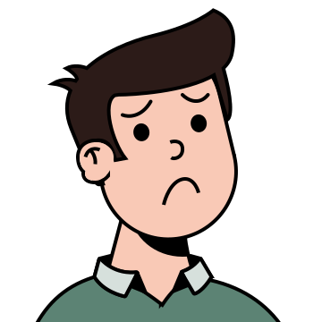
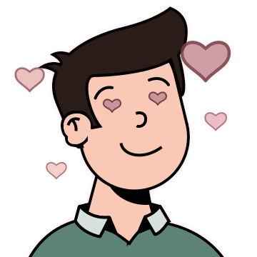

Built by
the Sakina engineering team.
A multilingual, emotion-aware, safety-first mental-health support system designed, evaluated, and presented as a complete NLP final project.
Sakina
a multilingual safety-first AI companion.
A production-style mental-health support pipeline that detects language, reads emotion, routes intent, grounds answers with RAG, and streams empathetic replies in the user's language.
The turn is a cinematic pipeline, not a single prompt.
Every module has a clear responsibility, and the route changes only when the intent or crisis state demands it.
Input 1
Text goes to /chat. Voice first becomes text through /stt.
Speech 2
Groq Whisper returns deterministic plain text.
Crisis 3
Regex safety gate can stop the normal AI path immediately.
Language 4
TF-IDF + calibrated LinearSVC with runtime guards.
Emotion 5
NLLB to English, then DistilBERT emotion labels.
Intent 6
Few-shot LLM classifier decides whether retrieval is needed.
RAG 7
BM25 + bge-m3 + RRF + reranker for counseling notes.
Reply 8
Lightning gpt-oss-120b composes and streams the answer.
TTS 9
Optional Groq Orpheus voice output after text exists.
Memory 10
Messages, prior language, and RAG cache are written after stream.
Adjacent
Scribble, letter forward, and soundscape stay outside chat inference.
Storage
Redis or fallback memory, Qdrant vectors, client-side settings.
Two entrances. One canonical text pipeline.
Typed messages go straight to chat. Voice is converted once, then follows the exact same crisis, language, emotion, intent, RAG, and generation path.
- Text entry: /chat or /chat/ui.
- Audio entry: POST /stt in api/app/stt.py.
- STT model: whisper-large-v3-turbo through Groq.
- Temperature is 0.0; language is auto-detected by Whisper.
bytes -> Groq Whisper -> plain text
message -> crisis gate -> analysis
The first decision is safety, before intelligence.
The crisis gate is model-free and recall-first. If it triggers, no language detector, emotion model, intent model, RAG, or LLM generation runs for that turn.
- English and Arabic self-harm / suicide patterns in api/app/safety.py.
- Arabic normalization removes diacritics and tatweel, unifies alef, yaa, and teh variants.
- Metadata streams as kind = crisis, emotion = sadness, no sources.
- Trusted-person email triggers async n8n webhook with intent = help.
Language is state, routing context, and UX contract.
The detector returns lang, confidence, and source, then the rest of the system uses that signal for translation, response language, and short-message recovery.
Runtime model
- TfidfVectorizer with char_wb n-grams 1 to 4.
- Calibrated LinearSVC exported to lang_id.joblib.
- Preprocess: strip URLs, Unicode NFKC normalization, lowercase.
- Warmed once at FastAPI startup through orchestrator.warmup().
Why it matters
Sakina can reply in the user's language, translate emotions correctly, store prior language, and handle ambiguous follow-ups like "ok", emojis, or short replies.
The classifier was excellent. Chat text was not.
Clean sentence-length test data hid real chat risks: short tokens, emojis, digits, and mixed scripts. The runtime guard closes that gap.
Guard order
Notebook selection
Emotion is multilingual through translation, not retraining.
After language detection, emotion and intent run concurrently. Emotion translates non-English text to English, classifies six DAIR labels, and passes the English text forward.
Detected language -> English on CPU.
bhadresh-savani/distilbert-base-uncased-emotion.
- Returns emotion, confidence, and translated_text.
- translated_text becomes the English RAG query.
- NLLB is also reused to build the English reveal text in the UI.
Macro-F1 mattered because the emotion dataset was imbalanced.
DAIR is English-only and heavily skewed. Sakina chose translate-then-classify because it held up better across the 20-language evaluation slice.
Translator comparison by pooled macro-F1
Known limitation: translation can distort emotional tone; surprise remains the weakest class in English F1.
Intent is the switchboard for the rest of the turn.
A deterministic few-shot LLM prompt produces one of five labels. Only one label unlocks retrieval.
Runtime details
- Implemented in api/app/models/intent.py.
- Prompt artifact: intent_few_shot.json.
- Model: lightning-ai/gpt-oss-120b.
- temperature = 0.0, max_tokens = 512.
Parser contract
- Lowercase the response.
- Search for allowed labels.
- If multiple labels appear, the last label wins.
- If parsing or API fails, return out_of_scope.
The simplest prompt beat the heavier optimizer.
The notebook designed, evaluated, and exported a prompt rather than training a deployed intent model.
Design choices
- English and Arabic examples are included in the demonstration bank.
- Train examples only are used for few-shot demonstrations.
- DSPy/MIPROv2 was removed because it scored lower and added runtime dependency.
- Main probe weakness: synthetic compound greetings.
Retrieval is not global. It is earned by intent.
RAG runs only for asking_mental_health_question. This keeps latency down and prevents unrelated requests from being grounded in a counseling corpus.
Mental-health question
Retrieve counselor notes, then compose with grounded support.
RAG onGreeting, goodbye, thanks, off-topic
Skip retrieval and use intent-specific response guidance.
RAG skippedCorpus and storage
The corpus is English, so non-English user messages reuse the NLLB-translated emotion text as the retrieval query.
Keyword precision and semantic recall converge before reranking.
BM25 catches exact terms. Dense search catches paraphrases. RRF fuses ranked lists without comparing incompatible scores.
Lowercase word tokenization, strong for exact words like sleep, panic, stress.
Query embedding searches Qdrant for semantic similarity.
Passages near the top of either list gain fused score.
Reads query and candidate together for relevance scoring.
Final top 3 passages move into the system prompt.
Stores retrieved source passages, not generated replies.
Retrieval quality is measured as a smoke test, not a clinical benchmark.
The notebook validates that the hybrid retriever can find useful evidence and that generated answers stay faithful to retrieved notes.
Runtime profile
- RAGRetriever loads BM25 from disk.
- Query embedder: BAAI/bge-m3.
- Reranker: BAAI/bge-reranker-v2-m3.
- Lazy singleton through get_retriever(), warmed at startup.
- Commented runtime footprint is roughly 4.6 GB for embedder + reranker.
The final answer is composed from structured signals.
The orchestrator builds a prompt with language, emotion, intent guidance, recent history, and optional counselor notes, then streams chunks back to the client.
Prompt ingredients




The frontend receives more than words.
Sakina streams text plus metadata that controls language display, emotion visuals, sources, crisis state, widgets, and English reveal behavior.
- Emotion metadata updates the adaptive avatar and visual tone.
- Language metadata supports RTL/LTR and localized reply rendering.
- RAG sources are shown only when retrieval exists.
- Final text dictionary supports original reply and English reveal.
- Crisis state changes the UI path and disables normal source flow.
Memory makes the next short message safer.
After the assistant finishes streaming, Sakina stores the user turn, assistant turn, and prior language. Retrieval results can also be cached for repeated English queries.
- Implemented in api/app/memory.py.
- Called from api/app/main.py after response completion.
- Redis is used when configured; otherwise in-process fallback.
- Failures are safe misses or no-op writes, never request breakers.
- RAG cache stores source passages, not assistant text.
Voice output happens after the assistant text exists.
TTS is optional and downstream. It never changes language detection, emotion, intent, RAG, or generation.
Groq Orpheus Arabic model and voice.
Groq Orpheus English model and voice.
Endpoint and implementation
- Exposed by POST /tts.
- Implemented in api/app/tts.py.
- Runs after response text is available.
- Voice features are adjacent to the inference path, not inside it.
Not every feature belongs inside inference.
Scribble, Letter Forward, and Soundscape are deliberately separate so the chat pipeline remains predictable.
Scribble
POST /scribble/reflect sends a base64 canvas image to Gemini image understanding for tentative reflection and one DAIR-style emotion label.
Letter Forward
Future-self letters go from the client to n8n with intent = letter. Crisis help can use the same webhook with intent = help.
Soundscape
Static rain, ocean, cafe, and forest audio files loop in the browser and do not affect AI modules.
Client settings
Name, user email, and trusted-person email live on the client device, not in a backend database table.
Boundary rule
Adjacent features may enrich the product, but they do not enter language detection, emotion classification, intent routing, RAG, or response generation.
State is split by responsibility.
Conversation continuity, vector retrieval, and user contact settings are intentionally stored in different places.
Redis or fallback
Conversation turns, prior language, and short-lived RAG cache entries.
Qdrant
Dense bge-m3 vectors for counseling chunks in the configured collection.
Client device
Name, email, and trusted-person contact stored through local settings.
Each turn becomes a sequence of guarded commitments.
The architecture is explainable because every transition has a precise reason: safety, language, emotion, intent, evidence, response, memory.